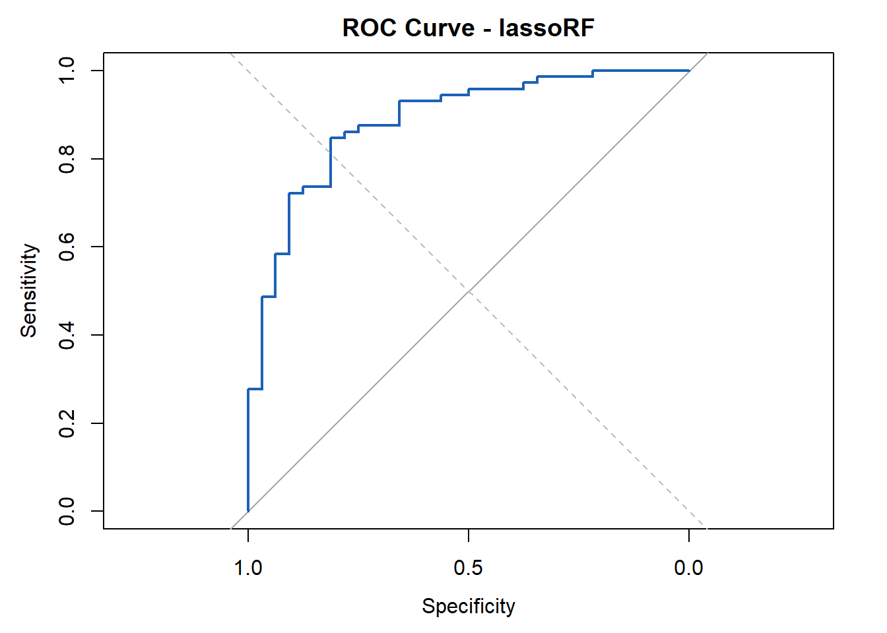

# Set file paths
data_dir <- "C:/Users/User/Documents/UCSF/BREATH2.Prot/data"
results_dir <- "C:/Users/User/Documents/UCSF/BREATH2.Prot/results"
setwd(data_dir)
# Import data from Box
vap_soma_normalized <- read.csv(file.path(data_dir, "vap_soma_normalized.csv"))
JCI_expanded_metadata <- read.csv(file.path(data_dir, "JCI_expanded_metadata.csv"))
# Keeps only the patient with ID 1037929 that appears in both data sets.
JCI_expanded_metadata <- JCI_expanded_metadata[
!duplicated(JCI_expanded_metadata$SubjectID), ]
# Log2 Transformation
prot_cols <- grepl("^seq_", names(vap_soma_normalized))
vap_soma_normalized[, prot_cols] <- log2(vap_soma_normalized[, prot_cols])
write.csv(vap_soma_normalized, file.path(data_dir, "vap_soma_normalized_transformed.csv"), row.names = FALSE)
# Include only the 150 patients with both transcriptomic and proteomic data
patients_vector <- intersect(vap_soma_normalized$patient_id,
JCI_expanded_metadata$SubjectID)
Prot.Data <- vap_soma_normalized[vap_soma_normalized$patient_id %in% patients_vector, ]
Meta.Data <- JCI_expanded_metadata[JCI_expanded_metadata$SubjectID %in% patients_vector, ]
#sum(duplicated(Meta.Data$SubjectID))
#Meta.Data$SubjectID[duplicated(Meta.Data$SubjectID)]
#length(patients_vector)
#dim(Prot.Data)
#dim(Meta.Data)
# Ensures rows of Meta.Data match those of Prot.Data
Meta.Data <- Meta.Data[match(Prot.Data$patient_id, Meta.Data$SubjectID), ]
# Produces data frame with patients, age_in_years, sex, and LRTI_Adjudication
patient_info_ALL <- data.frame(
patient_id = Prot.Data$patient_id,
sex = Meta.Data$sex,
age_in_years = Meta.Data$age_in_years,
LRTI_adjudication = Meta.Data$LRTI_adjudication,
stringsAsFactors = FALSE
)
write.csv(Meta.Data, file.path(data_dir, "meta.data.csv"), row.names = FALSE)
write.csv(Prot.Data, file.path(data_dir, "prot.data.csv"), row.names = FALSE)
write.csv(patient_info_ALL, file.path(data_dir, "patient_info_ALL.csv"), row.names = FALSE)
# Isolating Protein Matrix (Columns 211:7806 include the 7596 proteins)
protein_mat_ALL <- as.matrix(Prot.Data[, prot_cols])
# Sets rownames to patient_id
rownames(protein_mat_ALL) <- Prot.Data[, 1]
write.csv(protein_mat_ALL, file.path(data_dir, "protein_mat_ALL.csv"), row.names = TRUE)
#print(head(protein_mat_ALL))Prot.Classifier
1. Import and Organize Data
Notes: patient_id 1037929 is present twice in JCI_expanded_metadata. I removed the 1037929 row that was NOT present in the vap_soma_normalized dataset. I determined which patient this was by comparing birthday to age and date of admission.
2. Prepare Protein Matrix and Patient Info for LASSO/RF
# Include only Definite and No Evidence patients
patient_info <- patient_info_ALL[patient_info_ALL$LRTI_adjudication %in%
c("Definite", "No Evidence"), ]
# Includes only the protein matrix for Definite and No Evidence patients
protein_mat <- protein_mat_ALL[match(patient_info$patient_id,
rownames(protein_mat_ALL)), ]
# Ensures that protein_mat rownames match patient_id column in patient_info
all(rownames(protein_mat) == patient_info$patient_id)[1] TRUEwrite.csv(patient_info, file.path(data_dir, "patient_info.csv"), row.names= FALSE)
write.csv(protein_mat, file.path(data_dir, "protein_mat.csv"), row.names = TRUE)
# Define parameters
Definite <- table(patient_info$LRTI_adjudication)["Definite"]
No_Evidence <- table(patient_info$LRTI_adjudication)["No Evidence"]
npatients <- nrow(patient_info)
nproteins <- ncol(protein_mat)
nfolds <- 5
ntrees <- 10000
# Store parameters as data frame
Parameters <- data.frame(c(npatients, Definite, No_Evidence, nproteins, nfolds, ntrees))
row.names(Parameters) = c("Patients", "Definite", "No Evidence", "Proteins", "Folds", "RF Trees")
colnames(Parameters) = "Count"
write.csv(Parameters, file.path(data_dir, "parameters.csv"), row.names = TRUE)
print(Parameters) Count
Patients 104
Definite 72
No Evidence 32
Proteins 7596
Folds 5
RF Trees 100003. Fold Assignments (5 Folds)
library(dplyr)
# Import data
setwd(data_dir)
patient_info <- read.csv("patient_info.csv", stringsAsFactors = FALSE)
# Set seed to 8634782 = "BREATH2" .. kinda?
set.seed(8634782)
folds_ok <- FALSE
# Adds fold column to patient_info to create patient_info_with_folds
while (!folds_ok) {
patient_info_with_folds <- patient_info %>%
group_by(LRTI_adjudication) %>%
mutate(fold = sample(rep(1:nfolds, length.out = n()))) %>%
ungroup()
# Check if each fold has at least 6 "No Evidence" samples because ⌊32 / 5⌋ = 6
counts <- table(patient_info_with_folds$fold, patient_info_with_folds$LRTI_adjudication)
if (all(counts[, "No Evidence"] >= 6)) {
folds_ok <- TRUE
}
}
# Patient info with fold assignment
write.csv(patient_info_with_folds, file.path(data_dir, "patient_info_with_folds.csv"), row.names = FALSE)
print(counts)
Definite No Evidence
1 15 7
2 15 7
3 14 6
4 14 6
5 14 64. Run LASSO
library(dplyr)
library(magrittr)
library(glmnet)
library(tibble)
set.seed(8634782)
# Import data
patient_info_with_folds <- read.csv(file.path(data_dir, "patient_info_with_folds.csv"), stringsAsFactors = FALSE)
protein_mat <- read.csv(file.path(data_dir, "protein_mat.csv"), row.names = 1)
# Confirm correct data format for regression variables
X <- as.matrix(protein_mat)
y <- patient_info_with_folds$LRTI_adjudication == "Definite"
# Function to extract non-zero values
lasso_coef_df <- function(mod) {
coefs <- coef(mod, s = "lambda.1se")[, 1]
# Remove intercept
coefs <- coefs[-1]
# Identify nonzero coefficients
nonzero <- coefs[coefs != 0]
# If fewer than 3 proteins selected, pick the top 3 by absolute value
if(length(nonzero) < 3){
abs_coefs <- abs(coefs)
top3 <- sort(abs_coefs, decreasing = TRUE)[1:3]
nonzero <- coefs[names(top3)]
}
# Return as data.frame
data.frame(protein = names(nonzero), coef = as.numeric(nonzero))
}
# Function for a single outer CV fold
lasso_cv_outer_fold <- function(test_fold) {
train <- patient_info_with_folds$fold != test_fold
foldid <- patient_info_with_folds$fold[train]
foldid <- as.integer(as.factor(foldid))
mod <- glmnet::cv.glmnet(
X[train, ], y[train],
family = "binomial",
foldid = foldid
)
# Predictions on test fold
preds <- predict(mod, X[!train, ], type = "response", s = "lambda.1se")[, 1] %>%
data.frame(pred = .) %>%
tibble::rownames_to_column("sample_name")
# Nonzero coefficients for this fold
nonzero <- lasso_coef_df(mod) %>%
mutate(fold = test_fold)
list(pred = preds, mod = mod, coef = nonzero)
}
# Run LASSO across all folds
lasso_results <- lapply(1:max(patient_info_with_folds$fold), lasso_cv_outer_fold)
# Create lasso_preds which shows the predicted probability of Definite per patient
lasso_preds <- lasso_results %>%
lapply(function(x) x$pred) %>%
bind_rows()
# Create lasso_fold_coefs which selects the proteins with nonzero coefficients
lasso_fold_coefs <- lasso_results %>%
lapply(function(x) x$coef) %>%
bind_rows()
# Isolates the top 3 proteins by coefficient absolute value.
lasso_fold_coefs_top3 <- lasso_fold_coefs %>%
group_by(protein) %>%
slice_max(abs(coef), n = 1) %>%
ungroup() %>%
arrange(desc(abs(coef))) %>%
slice(1:3)
# Save outputs
write.csv(lasso_preds, file.path(results_dir, "lasso_preds.csv"), row.names = FALSE)
write.csv(lasso_fold_coefs, file.path(results_dir, "lasso_fold_coefs.csv"), row.names = FALSE)
write.csv(lasso_fold_coefs_top3, file.path(results_dir, "lasso_folds_coefs_top3.csv"), row.names = FALSE)
# Summary of selected proteins
print(table(lasso_fold_coefs$protein))
seq_10439_57 seq_11185_145 seq_13934_3 seq_14148_2 seq_15386_7
2 5 3 1 3
seq_15516_12 seq_19563_3 seq_20950_159 seq_21113_3 seq_23413_38
1 1 1 1 1
seq_25921_3 seq_3195_50 seq_4155_3 seq_4342_10 seq_4867_15
1 5 1 1 2
seq_6081_52 seq_6383_90 seq_6518_85 seq_6990_44 seq_7131_207
1 3 1 1 1
seq_7211_2 seq_7905_30 seq_8866_53 seq_9453_12 seq_9847_21
1 1 1 1 1
seq_9851_9
2 #print(head(lasso_fold_coefs))
print(lasso_fold_coefs_top3)# A tibble: 3 × 3
protein coef fold
<chr> <dbl> <int>
1 seq_6518_85 -0.692 1
2 seq_8866_53 -0.575 5
3 seq_11185_145 0.547 5Notes: Both lasso_fold_coefs and lasso_fold_coefs_top3 are defined. Either can be substituted into the RF workflow.
5. Implement RF
library(dplyr)
library(magrittr)
library(randomForest)
library(tibble)
set.seed(8634782)
# Import data
patient_info_with_folds <- read.csv(file.path(data_dir, "patient_info_with_folds.csv"), stringsAsFactors = FALSE)
protein_mat <- read.csv(file.path(data_dir, "protein_mat.csv"), row.names = 1)
# Convert patient_id to character
patient_info_with_folds$patient_id <- as.character(patient_info_with_folds$patient_id)
# Import selected proteins
lasso_fold_coefs <- read.csv(file.path(results_dir, "lasso_fold_coefs.csv"), stringsAsFactors = FALSE)
#lasso_fold_coefs <- lasso_fold_coefs_top3 #(Can be used to substitute for alternate workflow)
# Ensure row names match sample names (safety step)
rownames(protein_mat) <- patient_info_with_folds$patient_id
# Outcome variable
y <- as.factor(patient_info_with_folds$LRTI_adjudication)
# Function to run Random Forest for one outer CV fold
lassoRF_cv_outer_fold <- function(test_fold) {
# Extract proteins selected by LASSO for this fold
keep <- lasso_fold_coefs %>%
filter(fold == test_fold) %>%
.$protein
#keep <- lasso_fold_coefs_top3$protein #(uncomment to run top3)
# Subset protein matrix to selected proteins; rows = samples, columns = selected proteins
X <- protein_mat[, keep, drop = FALSE]
# Boolean for training samples
train <- patient_info_with_folds$fold != test_fold
# Fit Random Forest (10000 Trees)
rf <- randomForest(X[train, , drop = FALSE], y[train], ntree = ntrees)
# Predictions on test fold
preds <- predict(rf, newdata = X[!train, , drop = FALSE], type = "prob")[, "Definite"]
list(test_fold = test_fold, mod = rf, pred = preds)
}
# Run RF across all folds
cv_list <- lapply(1:max(patient_info_with_folds$fold), lassoRF_cv_outer_fold)
# Collect out-of-fold predictions for all samples
rf_preds <- cv_list %>%
lapply(function(x) {
data.frame(
patient_id = rownames(protein_mat)[patient_info_with_folds$fold == x$test_fold],
pred = x$pred
)
}) %>%
bind_rows() %>%
left_join(patient_info_with_folds %>% select(patient_id, LRTI_adjudication),
by = "patient_id") %>%
relocate(LRTI_adjudication, .after = patient_id)
# Save RF predictions
write.csv(rf_preds, file.path(results_dir, "lassoRF_preds.csv"), row.names = FALSE)
# Collect RF votes (training set OOB probabilities)
rf_votes <- cv_list %>%
lapply(function(x) {
as.data.frame(x$mod$votes) %>%
tibble::rownames_to_column("patient_id") %>%
mutate(test_fold = x$test_fold) %>%
rename(pred = Definite) %>%
select(test_fold, patient_id, pred)
}) %>%
bind_rows() %>%
left_join(patient_info_with_folds %>% select(patient_id, LRTI_adjudication),
by = "patient_id") %>%
relocate(LRTI_adjudication, .after = patient_id)
# Save votes
write.csv(rf_votes, file.path(results_dir, "lassoRF_votes.csv"), row.names = FALSE)
#print(head(rf_preds))
#print(head(rf_votes))6. Generate ROC Graph
library(dplyr)
library(magrittr)
library(pROC)
# Import out-of-fold LASSO / RF predictions
lassoRF_preds <- read.csv(file.path(results_dir, "lassoRF_preds.csv"), stringsAsFactors = FALSE)
# Ensure classes are correct
lassoRF_preds$LRTI_adjudication <- factor(lassoRF_preds$LRTI_adjudication,
levels = c("No Evidence", "Definite"))
# Function to calculate and plot ROC/AUC for LASSO / RF
output_auc_roc_lassoRF <- function(preds_df, output_suffix) {
# Compute overall ROC and AUC
roc_obj <- roc(preds_df$LRTI_adjudication == "Definite", preds_df$pred)
auc_value <- auc(roc_obj)
message("Overall AUC for ", output_suffix, ": ", round(auc_value, 3))
# Plot ROC
plot(
roc_obj,
main = paste("ROC Curve -", output_suffix),
col = "#1c61b6",
lwd = 2
)
abline(a = 0, b = 1, lty = 2, col = "gray")
# Save to PDF
pdf(file.path(results_dir, paste0("ROC_", output_suffix, ".pdf")))
plot(
roc_obj,
main = paste("ROC Curve -", output_suffix),
col = "#1c61b6",
lwd = 2
)
abline(a = 0, b = 1, lty = 2, col = "gray")
dev.off()
# Return AUC
return(auc_value)
}
auc_lassoRF <- output_auc_roc_lassoRF(lassoRF_preds, "lassoRF")
print(auc_lassoRF)Area under the curve: 0.8845Produced Files
Raw Data
JCI_expanded_metadata -> Raw data from BOX including patient metadata
vap_soma_normalized -> Raw data from BOX including patient proteomic data for 7596 proteins
Processed Data
vap_soma_normalized_transformed -> log2 transformation of vap_soma_normalized
prot.data -> vap_soma_normalized_transformed including only the 150 patients that are also present in JCI_expanded_metadata
meta.data -> JCI_expanded_metadata including only the 150 patients that are also present in vap_soma_normalized_transformed
patient_info_ALL -> Includes only the patient_id, age_in_years, sex, and LRTI adjudication.
protein_mat_ALL -> Includes only the patient_id as rownames, and the 7596 proteins
patient_info -> patient_info_ALL including only the 104 patients with LRTI adjudication of Definite or No Evidence
protein_mat -> protein_mat_ALL including only the 104 patients with LRTI adjudication of Definite or No Evidence. Rownames match up with patient_id column in patient_info
parameters -> Includes parameters for the data such as number of proteins, patients, and Definite vs. No Evidence split.
LASSO / RF results
lasso_preds -> combined predicted probabilities for each test sample. Shows the probability of Definite for all 104 samples
lasso_fold_coefs -> shows the coefficients for all proteins with a nonzero coefficient, and shows the fold number for each of the proteins.
lasso_fold_coefs_top3 -> Isolates the top 3 proteins by absolute value of the coefficients. Includes the sign (negative or positive association)
lassoRF_preds -> Out-of-fold predictions for each patient in the test fold. Shows the LRTI adjudication next to the predicted probability of Definite for each of the 104 patients
lassoRF_votes -> OOB probability estimates for the training set.